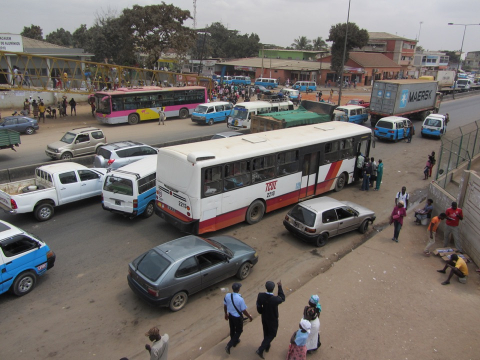

Transporte · Mutamba, Luanda
Autocarros urbanos (TCUL)
Bilhete de autocarro urbano: 200 Kz.
Os autocarros públicos urbanos de Luanda, com terminal na Mutamba, na Baixa. O bilhete tem o preço fixado pela ANTT.
Informação prática
- Horário
- Por confirmar
- Morada
- Mutamba, Luanda
- Preço
- 200 Kz por viagem
Tarifa urbana em vigor desde 7 de julho de 2025.
Verificado a 6 de outubro de 2026. Fontes: Expansão (julho de 2025), OpenStreetMap. Confirme sempre antes de ir.
Mais lugares em Luanda
- Café del Mar · Ilha de Luanda, Luanda
- O Madeirense · Liga Africana, Luanda
- Lookal Mar · Ilha de Luanda, Luanda
- Lookal Beach Club · Ilha de Luanda, Luanda
- EPIC SANA Luanda Hotel · Rua da Missão, Luanda
- Miradouro da Lua · Belas, Luanda
- NovaCâmbios · Av. Comandante Valódia, Luanda
- Fortaleza de São Miguel · Ingombota, Luanda
Autocarros urbanos (TCUL) — Transport, Mutamba, Luanda
City bus ticket: 200 Kz.
Luanda's public city buses, with a terminal at Mutamba, downtown. The fare is set by the transport regulator (ANTT).
Prices in Kwanza, opening hours and directions are in the Tuende app (Portuguese and English).